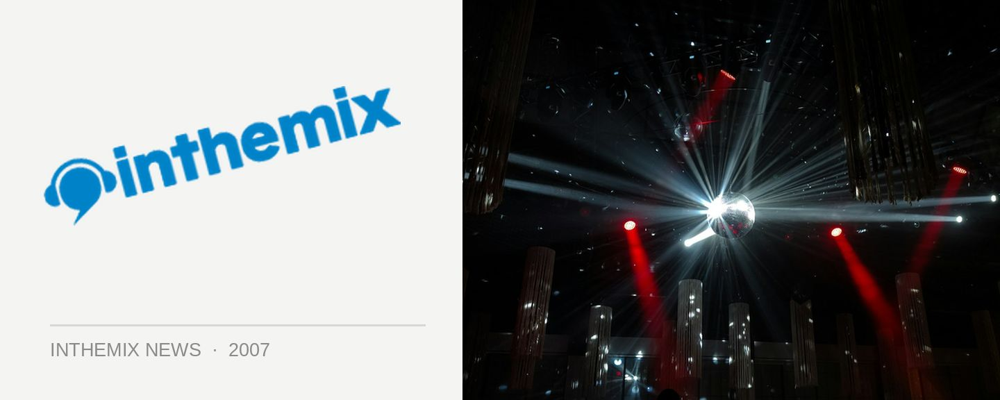

Kink 4th Birthday bash + 2 surprise international guests
One of Sydney’s biggest clubbing brands Kink will be having a massive bender on Saturday June 2nd, celebrating four years of clubbing mayhem at the classy Arthouse venue. Last year’s birthday celebrations featured a headline performance from no less than Danny Howells and this year they want to up the ante. The party will feature two surprise international guests whose identities won’t be revealed until the week before the event.
The inthemix50 #1 DJ Ajax will be sharing headline duties with the secret guests and he’ll be joined by a massive local lineup featuring the extended Kink family of DJ’s including Ben Morris, Shamus, Goodfella, John Glover, Telefunken, Reno, Matttt vs Tomass, Johnny Rad, Brenden Fing and Husky.
The celebrations will run from 9.30pm to 7am, and going on last year’s efforts of keeping the club pumping until 6.30am onwards, the organisers are expecting it to be just as cranking in 2007. To help guarantee your place on the floor, ITM has a limited selection of exclusive 1st release tickets available for only $25.
Kink 4th Birthday rocks into the Arthouse on Saturday June 2nd, stay tuned to ITM for details on the identities of the evening’s guest DJs…